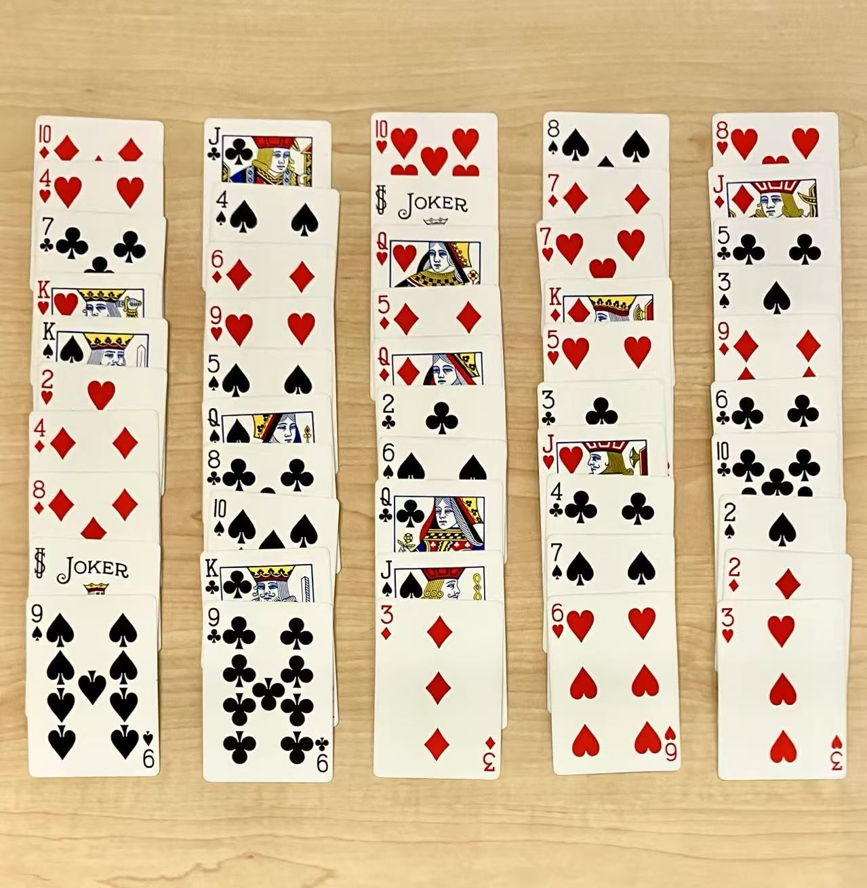

The Blood of an Englishman
An asymmetric duel for 2 players. Jack is nimble, darting through the castles and climbing beanstalks in search of treasure. The Giant responds with deliberation and crushing power, invoking ancient spells to trap the intruder.
This is a DIY version of the original game by Dan Cassar.
:strip_icc()/pic3136189.jpg)
Setup
Use a standard deck with all Aces removed. Deal the remaining cards face-up into 5 columns, representing 5 castles.
- 2-10 are Beanstalks
- Q and K are Magic Cards
- Red J, Black J, and Joker are Treasures
Gameplay
Players take turns, with Jack going first.
Jack's Turn
Jack takes 3 actions per turn. Each action start with taking one card from the front or back of any castle column, then choosing one of the following:
- Plant it on a beanstalk (Magic Cards cannot be planted)
- Move it to the front of any castle column (if taken from the back, it can only be placed at the front of the same column)
Each beanstalk must consist of 6 Beanstalk Cards in ascending order. Once completed, Jack must place a Treasure Card on it before starting a new one.
Giant's Turn
The Giant performs one of the following actions per turn:
- Move exactly four front cards from one castle to the front of another
- Remove any one Beanstalk Card from the castles (out of the game)
- Do two moves: each move is transferring the front card of a castle to the front of another castle
Victory Conditions
Jack Wins If:
- He collects all 3 types of treasures: Red J, Black J, and Joker
The Giant Wins If:
- Jack is unable to complete 3 full beanstalks with treasures
- Or the Magic Cards meet one of these patterns:
- Four consecutive Magic Cards of different suits in one castle
- The front cards of four different castles are Magic Cards of four different suits